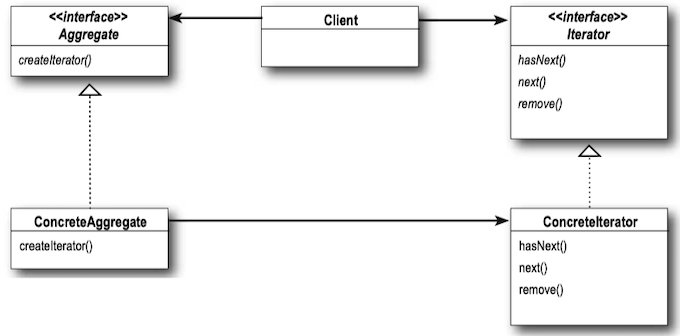
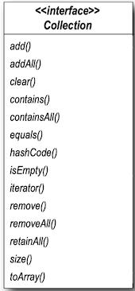
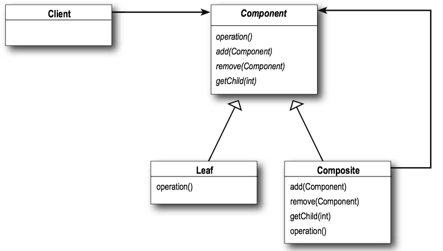
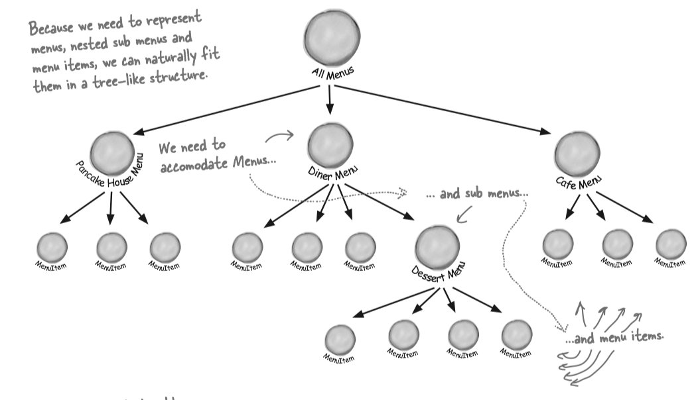
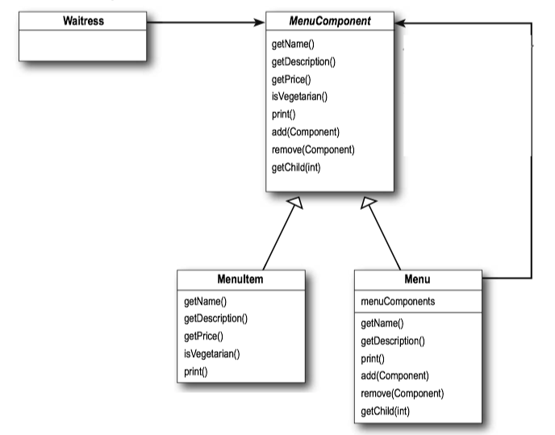
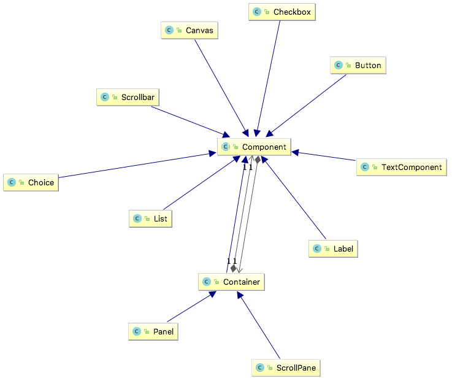

Head First Design Patterns 9 - Iterator and Composite Pattern¶
1 Iterator Pattern¶
Iterator Pattern Defined¶
The Iterator Pattern(迭代器模式) provides a way to access the elements of an aggregate object sequentially without exposing its underlying representation.
Iterator Pattern takes the responsibility of traversing elements and gives that responsibility to the iterator object, not the aggregate object.
Iterator Pattern Class Diagram¶

- The
ConcreteAggregate has a collection of objects and implements the method that returns anIterator for its collection. - The
Iterator interface provides the interface that all iterators must implement, and a set of methods for traversing over elements of a collection.
Note
Java’s Collection Framework provides another type of iterator interface called
Design Principle - Single Responsibility¶
Design Principle - Single Responsibility : A class should have only one reason to change.
Every responsibility of a class is an area of potential change. More than one responsibility means more than one area of change.
Example - Café Menu¶
public interface Menu { public Iterator<MenuItem> createIterator(); } public class CafeMenu implements Menu { HashMap<String, MenuItem> menuItems = new HashMap<String, MenuItem>(); public CafeMenu() { addItem("Veggie Burger and Air Fries", "Veggie burger on a whole wheat bun, lettuce, tomato, and fries", true, 3.99); addItem("Soup of the day", "A cup of the soup of the day, with a side salad", false, 3.69); addItem("Burrito", "A large burrito, with whole pinto beans, salsa, guacamole", true, 4.29); } public void addItem(String name, String description, boolean vegetarian, double price) { MenuItem menuItem = new MenuItem(name, description, vegetarian, price); menuItems.put(menuItem.getName(), menuItem); } public Map<String, MenuItem> getItems() { return menuItems; } public Iterator<MenuItem> createIterator() { return menuItems.values().iterator(); } }
public class Waitress { Menu cafeMenu; public Waitress(Menu cafeMenu) { this.cafeMenu = cafeMenu; } public void printMenu() { Iterator<MenuItem> cafeIterator = cafeMenu.createIterator(); printMenu(cafeIterator); } private void printMenu(Iterator<MenuItem> iterator) { while (iterator.hasNext()) { MenuItem menuItem = iterator.next(); System.out.print(menuItem.getName() + ", "); System.out.print(menuItem.getPrice() + " -- "); System.out.println(menuItem.getDescription()); } } }
public class MenuTestDrive { public static void main(String args[]) { CafeMenu cafeMenu = new CafeMenu(); Waitress waitress = new Waitress(pancakeHouseMenu, dinerMenu, cafeMenu); waitress.printMenu(); } }
Iterators and Collections¶
Each

Java 5 includes a new form of the for statement, called
To use for/in, you use a for statement that looks like:
for (Object obj: collection) { ... }
- Iterates over each object in the Collection
obj is assigned to the next element in the collection each time through the loop.
2 Composite Pattern¶
Composite Pattern Defined¶
The Composite Pattern(组合模式) allows you to compose objects into tree structures to represent part-whole hierarchies. Composite lets clients treat individual objects and compositions of objects uniformly.
The Composite Pattern create a part-whole hierarchy; that is, a tree of objects that is made of parts (e.g. menus and menu items) but that can be treated as a whole. (i.e. treat “individual objects and compositions uniformly.”)
Cohesion is a term you’ll hear used as a measure of how closely a class or a module supports a single purpose or responsibility. We say that a module or class has high cohesion when it is designed around a set of related functions, and we say it has low cohesion when it is designed around a set of unrelated functions.
Composite Pattern Class Diagram¶

Example - Menus¶
We try to design a menu that support menus with menus. For example, we want to make the dessert menu an element of the DinerMenu collection.

Composite pattern gives us a way to create a tree structure that can handle a nested group of menus and menu items in the same structure.

- The
Waitress is going to use theMenuComponent interface to access bothMenus andMenuItems . MenuComponent represents the interface for bothMenuItem andMenu . We've used an abstract class here because we want to provide default implementations for these methods.
/** MenuComponent provides default implementation for every method. * */ public abstract class MenuComponent { public String getName(){ throw new UnsupportedOperationException(); } public String getDescription(){ throw new UnsupportedOperationException(); } public double getPrice() { throw new UnsupportedOperationException(); } public boolean isVegetarian() { throw new UnsupportedOperationException(); } public void print() { throw new UnsupportedOperationException(); } public void add(MenuComponent menuComponent) { throw new UnsupportedOperationException(); } public void remove(MenuComponent menuComponent) { throw new UnsupportedOperationException(); } public MenuComponent getChild(int index) { throw new UnsupportedOperationException(); } }
public class MenuItem extends MenuComponent { String name; String description; boolean isVegetarian; double price; public MenuItem(String name, String description, boolean vegetarian, double price) { this.name = name; this.description = description; this.isVegetarian = vegetarian; this.price = price; } @Override public String getName() { return name; } @Override public String getDescription() { return description; } @Override public boolean isVegetarian() { return isVegetarian; } @Override public double getPrice() { return price; } @Override public void print() { System.out.print(" " + getName()); if (isVegetarian()) { System.out.print("(v)"); } System.out.println(", " + getPrice()); System.out.println(" -- " + getDescription()); } // END PRINT }
public class Menu extends MenuComponent { private String name; private String description; private ArrayList<MenuComponent> menuComponents = new ArrayList<>(); public Menu(String name, String description) { this.name = name; this.description = description; } @Override public String getName() { return name; } @Override public String getDescription() { return description; } @Override public void add(MenuComponent menuComponent) { menuComponents.add(menuComponent); } @Override public void remove(MenuComponent menuComponent) { menuComponents.remove(menuComponent); } @Override public MenuComponent getChild(int index) { return menuComponents.get(index); } @Override public void print() { System.out.print("\n" + getName()); System.out.println("," + getDescription()); System.out.println("---------------------"); Iterator<MenuComponent> iterator = menuComponents.iterator(); while(iterator.hasNext()) { MenuComponent nextMenuComponent = iterator.next(); nextMenuComponent.print(); } } }
public class MenuTestDrive { public static void main(String args[]) { MenuComponent pancakeHouseMenu = new Menu("PANCAKE HOUSE MENU", "Breakfast"); MenuComponent dinerMenu = new Menu("DINER MENU", "Lunch"); MenuComponent cafeMenu = new Menu("CAFE MENU", "Dinner"); MenuComponent dessertMenu = new Menu("DESSERT MENU", "Dessert of course!"); MenuComponent coffeeMenu = new Menu("COFFEE MENU", "Stuff to go with your afternoon coffee"); MenuComponent allMenus = new Menu("ALL MENUS", "All menus combined"); allMenus.add(pancakeHouseMenu); allMenus.add(dinerMenu); allMenus.add(cafeMenu); pancakeHouseMenu.add(new MenuItem( "K&B's Pancake Breakfast", "Pancakes with scrambled eggs, and toast", true, 2.99)); pancakeHouseMenu.add(new MenuItem( "Regular Pancake Breakfast", "Pancakes with fried eggs, sausage", false, 2.99)); pancakeHouseMenu.add(new MenuItem( "Blueberry Pancakes", "Pancakes made with fresh blueberries, and blueberry syrup", true, 3.49)); pancakeHouseMenu.add(new MenuItem( "Waffles", "Waffles, with your choice of blueberries or strawberries", true, 3.59)); dinerMenu.add(new MenuItem( "Vegetarian BLT", "(Fakin') Bacon with lettuce & tomato on whole wheat", true, 2.99)); dinerMenu.add(new MenuItem( "BLT", "Bacon with lettuce & tomato on whole wheat", false, 2.99)); dinerMenu.add(new MenuItem( "Soup of the day", "A bowl of the soup of the day, with a side of potato salad", false, 3.29)); dinerMenu.add(new MenuItem( "Hotdog", "A hot dog, with saurkraut, relish, onions, topped with cheese", false, 3.05)); dinerMenu.add(new MenuItem( "Steamed Veggies and Brown Rice", "Steamed vegetables over brown rice", true, 3.99)); dinerMenu.add(new MenuItem( "Pasta", "Spaghetti with Marinara Sauce, and a slice of sourdough bread", true, 3.89)); dinerMenu.add(dessertMenu); dessertMenu.add(new MenuItem( "Apple Pie", "Apple pie with a flakey crust, topped with vanilla icecream", true, 1.59)); dessertMenu.add(new MenuItem( "Cheesecake", "Creamy New York cheesecake, with a chocolate graham crust", true, 1.99)); dessertMenu.add(new MenuItem( "Sorbet", "A scoop of raspberry and a scoop of lime", true, 1.89)); cafeMenu.add(new MenuItem( "Veggie Burger and Air Fries", "Veggie burger on a whole wheat bun, lettuce, tomato, and fries", true, 3.99)); cafeMenu.add(new MenuItem( "Soup of the day", "A cup of the soup of the day, with a side salad", false, 3.69)); cafeMenu.add(new MenuItem( "Burrito", "A large burrito, with whole pinto beans, salsa, guacamole", true, 4.29)); cafeMenu.add(coffeeMenu); coffeeMenu.add(new MenuItem( "Coffee Cake", "Crumbly cake topped with cinnamon and walnuts", true, 1.59)); coffeeMenu.add(new MenuItem( "Bagel", "Flavors include sesame, poppyseed, cinnamon raisin, pumpkin", false, 0.69)); coffeeMenu.add(new MenuItem( "Biscotti", "Three almond or hazelnut biscotti cookies", true, 0.89)); Waitress waitress = new Waitress(allMenus); waitress.printMenu(); } }
Example - java.awt.Container¶
- component:
Component - leaf:
Checkbox ,Button ,Label ... - composite:
Container

public class Container extends Component { public Component add(Component comp) {...} public void remove(Component comp) {...}